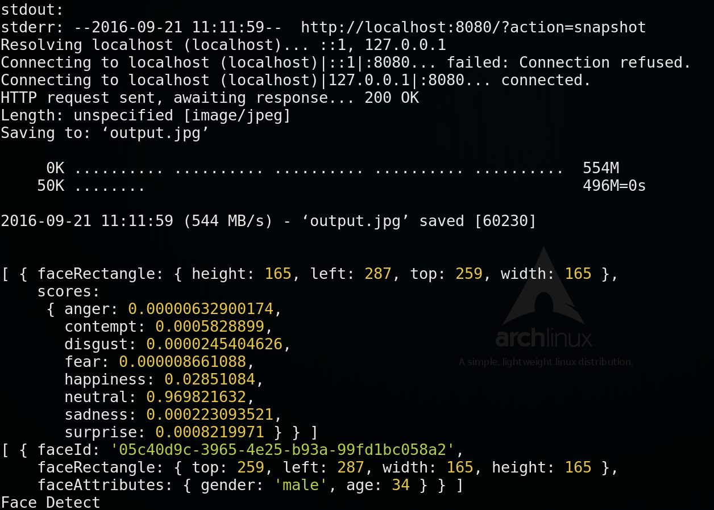

Application With Microsoft Cognitive Service
This project is for connecting web cam and Microsoft cognitive service through Linkit 7688,meanwhile, display the detected face information on the webpage
Requirements
- Linkit smart 7688
- webcam
Code review
cognitive.js
- open the webcam
- make snapshot periodically and output a jpg file
- read the jpg file and post to cognitive api
- recieve the response
- use socket.io to send data to index.html
- html canvas draw the text and frame
Usage
Login 7688 and type the following commands in the console.
Download the code and change the working directory to it.
curl -L https://github.com/YuanYouYuan/7688-note/raw/master/ch3-ms/code/face-cognition.tar.gz | tar zxv
cd ms-face-cognitionThen use sed command to change the linkit_7688_ip to which ip your 7688 is using. For example, my pc and 7688 are in the same local network, and my 7688 ip is 192.168.0.102.
sed -i 's/linkit_7688_ip/192.168.0.102/g' cognitive.js static/index.htmlGo to Microsoft Cognitive Service website and regist a new account if you don't have one. https://www.microsoft.com/cognitive-services
And go to Face API and have your new face api key.
Press copy button in Keys column and paste it in the sed command. For examle, my api key is a05f5738bdd7449b85ced1075129137b.
sed -i 's/my-face-api-key/a05f5738bdd7449b85ced1075129137b/g' face-cognition.jsAlso, have one emotion api key.
Press copy button in Keys emotion api column and paste it in the sed command. For examle, my api key is 512a3e8d759c45d2898a072e62a1b018.
sed -i 's/my-emotion-api-key/512a3e8d759c45d2898a072e62a1b018/g' face-cognition.jsFinally, connect your webcam with OTG cable to 7688 and run the cognition.js!
node face-cognition.jsDemo
